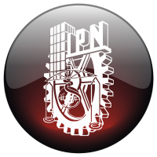

|  | Instituto Politécnico Nacional |
|
Escuela Superior de Ingeniería Mecánica y Eléctrica |
||
Ingeniería en Comunicaciones y Electrónica |
||
Lenguajes de Internet: Proyecto 1 |
||
Alumno: Andrade Barrera Marco Antonio |
Tiempo transcurrido
Imágenes descubiertas